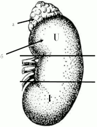
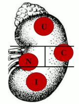
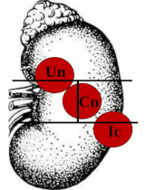
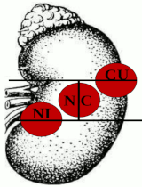
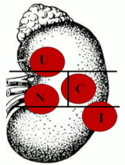
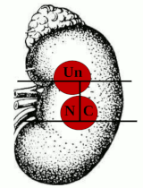

Центр сучасної урології

Локалізація пухлини
Як перший етап, на комп’ютерних знімках нирку розділяють на інтерполярний (середній) та полярні сегменти ((Upper) – верхній та (Inferior) – нижній) лініями, що проведені перпендикулярно до вертикальної осі нирки по краях медіальної губи, де паренхіма нирки продовжується у нирковий жир синусів, судин чи порожнистої системи.Далі проводимо перпендикуряну лінію, яка відповідає вертикальній осі нирки і проходить від верхньої до нижньої інтерполярної лінії. Таким чином середній сегмент розділяється ще на два сегменти ((Nearness) – близький до судинної ніжки чи медіальний та (Collateral) – латеральний)
Якщо пухлина повністю знаходиться в одному із цих сегментів, при цьому жодна із роздільних ліній її не перетинає, тоді їй присвоюється одна велика буква, що відповідає назві цього сегменту (наприклад: U, N, С, I). 
Якщо пухлина знаходиться як в одному, так і в іншому сегменті, але розміщення її в одному з них складає менше 15% об’єму пухлини, їй присвоюється одна велика буква, що відповідає назві більш ураженого сегменту (наприклад: U, N, С, I).
Якщо пухлина знаходиться як в одному, так і в іншому сегменті та розміщення її в одному з них складає більше 15% об’єму пухлини, їй присвоюється велика та мала буква, де велика буква відповідає сегменту, в якому розміщена більша частина пухлини, а мала – менша частина (наприклад: Un, Ic, Cn).
Якщо пухлина порівну знаходиться в обох сегментах, їй присвоюються обидві великі букви, що відповідають сегментам розміщення. При цьому першою ставиться буква складнішого, з точки зору хірургії, сегменту (наприклад: NC, NI, CU). 
Якщо пухлина одночасно знаходиться в трьох сегментах та є переважання розміщення її в одному з них, їй присвоюються дві букви відповідно першого та другого сегментів, в якому розміщення пухлини переважає (одна велика і одна мала (при ураженні другого сегменту більше 15%, але менше 50% об’єму пухлини) чи дві великі (при однаковому об’ємі ураження обох сегментів) (наприклад: Un, NC).
Автори розробили систему оцінки пухлинного ураження нирки (NCUI—nephrometry), що дає можливість визначити тактику оперативного лікування НКР.
Оберіть розміщення пухлини
Для визначення відсотку функціонуючої паренхіми нирки уведіть параметри
При екзофітному характері росту пухлини верхньою точкою відліку при визначенні
пухлинного ураження нирки служить початок пухлинного вростання в нирку, нижньою –
закінчення, медіальним краєм – медіальний край пухлини, латеральним краєм – удаваний
край самої нирки. При ендофітному характері росту пухлини краєм пухлинного ураження
нирки є край самої пухлини.

Обичслення та результат
Після заповнення усіх параметрів та визначення локалізації пухлини обчисліть ('значення*???')показання...